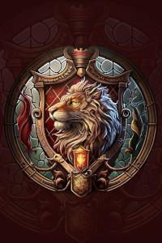
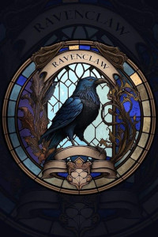
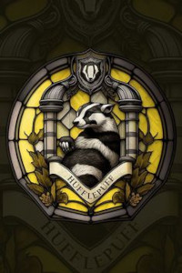
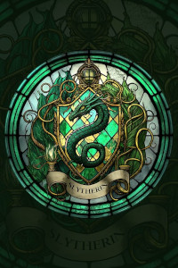

Chapéu seletor:
Foi enfeitiçado pelos quatro fundadores da Escola de Magia e Bruxaria de Hogwarts. A ideia de enfeitiçar o chapéu partiu do pensamento de quem selecionaria os alunos para as casas quando eles não estivessem mais vivos, ideia genial não é mesmo?
Escolha sua casa:
  